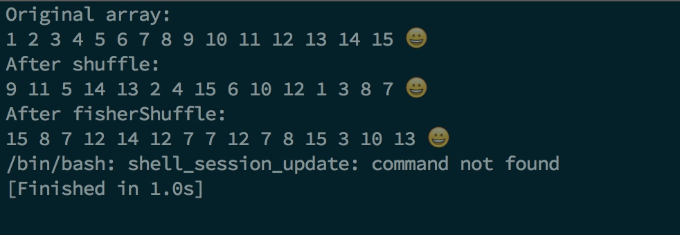
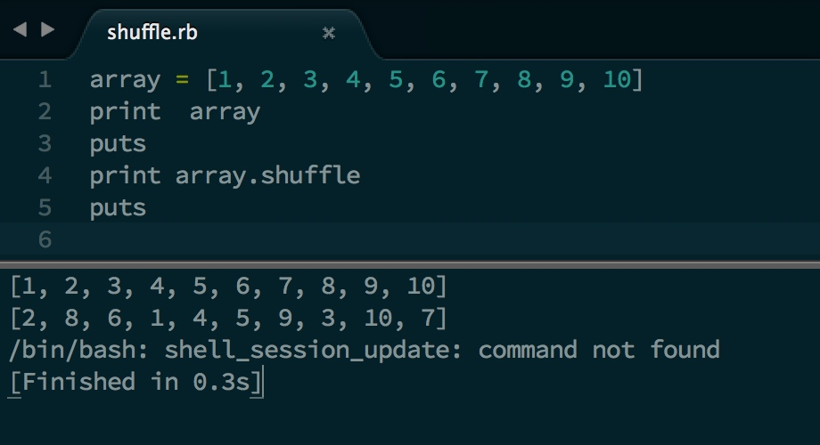

给定一个已知数组
array[]， 将array[]乱序后输出。
可以延伸为:例如，从 0～1000 中随机取数字100次，要求每次的结果不能相同。
这道题的想法来自于遇到的一个小问题，需要将一组包含20个字符串的数组乱序输出。
0x00
第一想法是，简单的从数组中取元素，然后加入到另一个数组中，加入之前判断这个元素是否已经存在。
这个算法的问题在于，运行初期，遇到问题的几率比较小，然而在判断最后几个元素的时候，由于巨大的碰撞几率(n个元素的数组，当第 n 个元素的时候，其实只有 \( \frac{1}{n} \) 的机会得到正确的结果)，当数组长度达到一定程度时，几乎无法使用。
0x01
结合查到的资料，得到这样的一个算法。即:
每次从已知数组中
随机取一个元素放入新数组，然后将最后一个元素的值赋给这个位置，将长度减1，然后再从length-1个元素中重复上述动作，即可得到一个随机数组。
这个算法的强势在于，时间复杂度为 \(O(n)\)，并且避开了可能出现的碰撞，实现了快速乱序。
下面是这个算法的 Java 实现(为了表述方便选择了 int 型的数组)
class RandomArray{
public static int[] shuffle(int[] array) {
int length = array.length;
int[] shuffledArray = new int[length];
int index = 0;
java.util.Random random = new java.util.Random();
for (int count=length; count>0; count--) {
int randomIndex = Math.abs(random.nextInt())%(count);
shuffledArray[index] = array[randomIndex];
index += 1;
array[randomIndex] = array[count-1];
}
return shuffledArray;
}
}
可以在这个类中增加一个测试方法:
public static void printArray(int[] array){
int len = array.length;
for (int i=0; i<len; i++) {
System.out.print(array[i] + " ");
}
System.out.println("😀");
}
public static void main(String[] args) {
int array[] = {1,2,3,4,5,6,7,8,9,0,213,123,23,1,23};
printArray(array);
printArray(shuffle(array));
}
每次运行时产生的随机数序列都是不同的，如果需要每次运行结果相同，可以修改随机数生成算法，使得每次运行时都能得到相同的随机数序列。
0x02
The Fisher–Yates shuffle is an algorithm for generating a random permutation of a finite set—in plain terms, the algorithm shuffles the set. The algorithm effectively puts all the elements into a hat; it continually determines the next element by randomly drawing an element from the hat until no elements remain. The algorithm produces an unbiased permutation: every permutation is equally likely. The modern version of the algorithm is efficient: it takes time proportional to the number of items being shuffled and shuffles them in place.
From wikipedia
Fisher-Yates 算法不需要新建一个数组来保存随机后的数组，而是直接在数组中进行操作，并且时间复杂度依然是 \(O(n)\)
Wiki 上提供的一个伪代码如下:
-- To shuffle an array a of n elements (indices 0..n-1):
for i from 0 to n−2 do
j ← random integer such that 0 ≤ j < n-i
exchange a[i] and a[i+j]
算法思想很简单，在具有 n 个元素的数组中，从 0 到 n-2 依次进行与一个随机位置的元素进行交换。
将伪代码改写成 Java 代码:
public static int[] fisherShuffle(int[] array) {
int length = array.length;
java.util.Random random = new java.util.Random();
for (int i=0;i<length-1; i++) {
int j = Math.abs(random.nextInt())%(length-i);
int temp = array[i];
array[i] = array[i+j];
array[i+j] = temp;
}
return array;
}
运行结果如下:

0x03
当然如果使用像 Ruby 这样的语言，已经内置好了 shuffle 算法，只需要直接调用即可。
array = [1, 2, 3, 4, 5, 6, 7, 8, 9, 10]
print array
puts
print array.shuffle
puts

简直黑科技...
让我们大喊一声: “Ruby 大法好！”